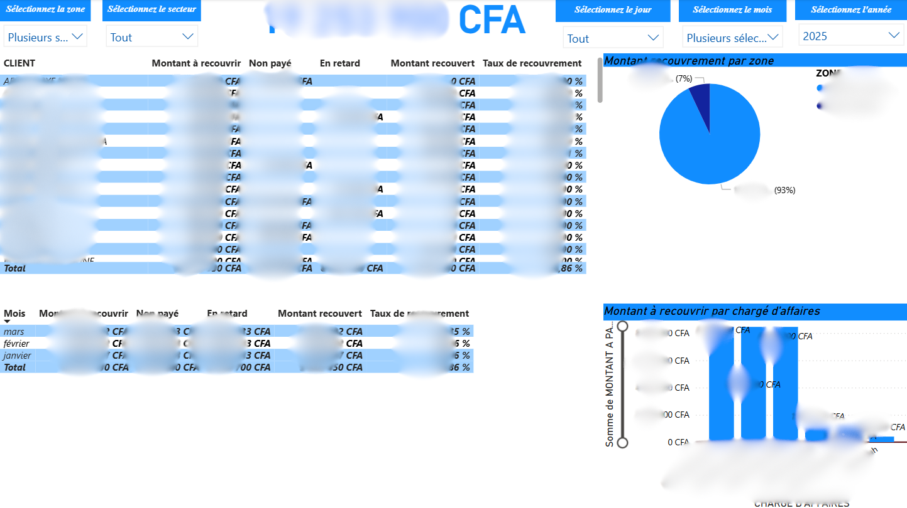
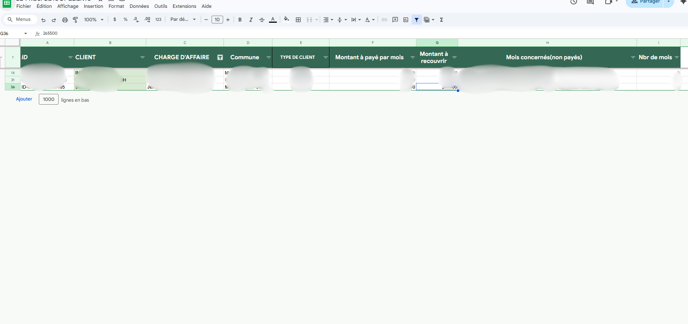
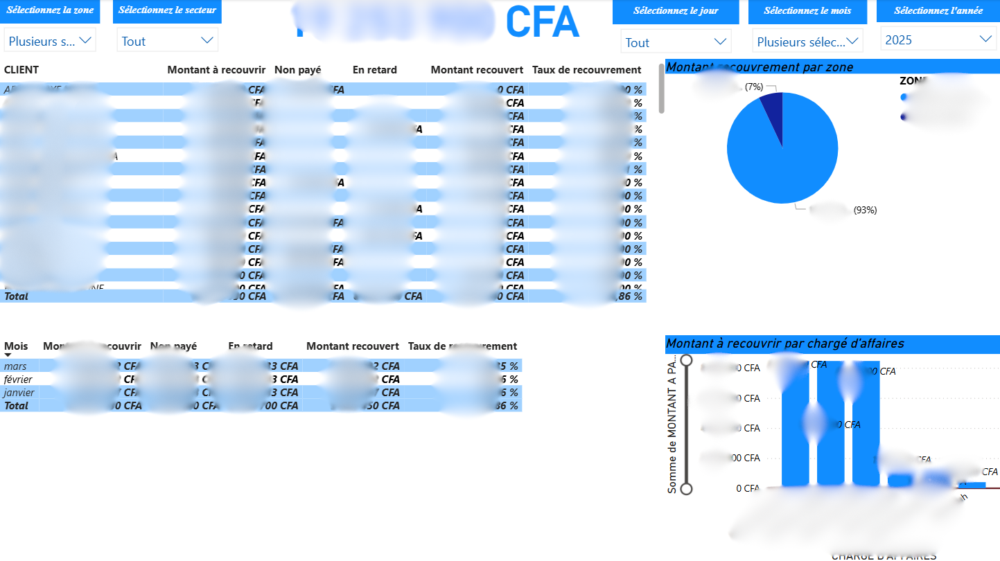
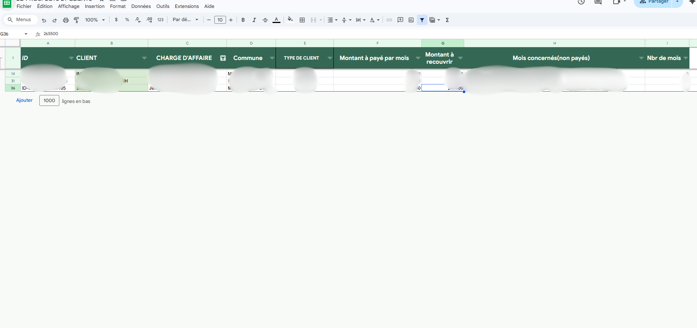

SUIVI DE RECOUVREMENT — Pilotage temps réel & anti-oubli (Google Sheets)
Système de suivi des recouvrements conçu pour offrir une vision instantanée des paiements, retards et montants à recouvrer, avec une automatisation complète sous Google Sheets.
Contexte
Pour améliorer la visibilité et le pilotage financier, j’ai proposé à la Direction Générale un système centralisé...
Objectifs
- Suivi en ligne en temps réel (données consultables instantanément)
- Automatiser les statuts : Payé / En retard / Non payé
- Réduire les oublis et supprimer les rapports manuels inutiles
- Créer des vues par commercial (portefeuille clients)
- Rendre les données prêtes pour KPI & Power BI (taux de recouvrement, évolution, segmentation)
Workflow (processus métier)
- Saisie : le collecteur renseigne les paiements dans la feuille RECETTES RECOUVREMENTS.
- Centralisation : consolidation via IMPORTRANGE.
- Jointure : utilisation de la base clients (ID, contact, abonnement...).
- Automatisation : la feuille SUIVI DE RECOUVREMENTS se met à jour en continu.
- Vues décisionnelles : feuille A RECOUVRIR générée automatiquement.
Automatisation (Google Sheets avancé)
- Consolidation multi-fichiers : IMPORTRANGE + QUERY
- Génération automatique des colonnes mensuelles
- Statuts dynamiques selon le type d’abonnement
- Filtrage complet : ID, agent, commune, zone, type client
- Tableaux de synthèse : payés / attendus / à recouvrer
Exemples de briques techniques
Quelques briques utilisées (extraits) : ARRAYFORMULA, FILTER, QUERY, IMPORTRANGE...
Voir un exemple de consolidation (IMPORTRANGE)
=IMPORTRANGE("URL_DU_FICHIER", "RECETTES RECOUVREMENTS!A1:L")
Voir un exemple de logique "état de paiement"
- Si paiement trouvé → afficher montant payé
- Sinon → En retard (si dépassement du délai)
- Sinon → Non payé (si dépassement seuil)
Technologies
- Google Sheets (tables, vues, filtres, validations)
- Fonctions avancées : ARRAYFORMULA, QUERY, IMPORTRANGE, FILTER, REGEXMATCH…
- Business Intelligence : Power BI (KPI et visualisations)
Résultats & Impact
- Vision claire des encaissements et des retards (temps réel)
- Réduction des oublis via “A RECOUVRIR” auto-générée
- Données prêtes pour Power BI : taux de recouvrement, progression, segmentation
Captures
 



Note confidentialité : captures anonymisées (noms, montants, contacts) pour respecter les données entreprise.